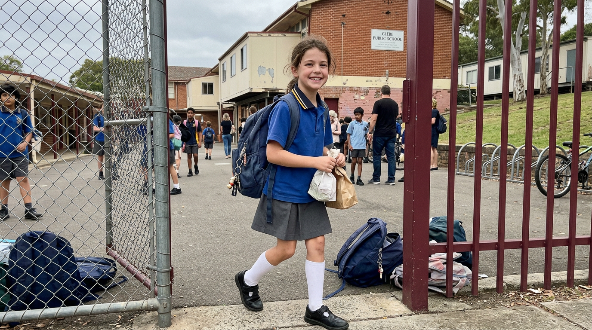
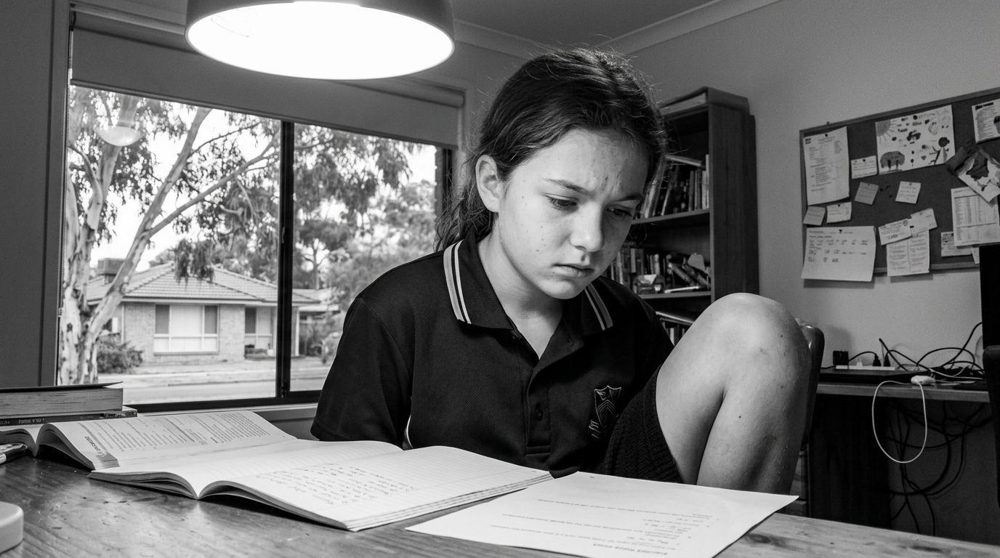
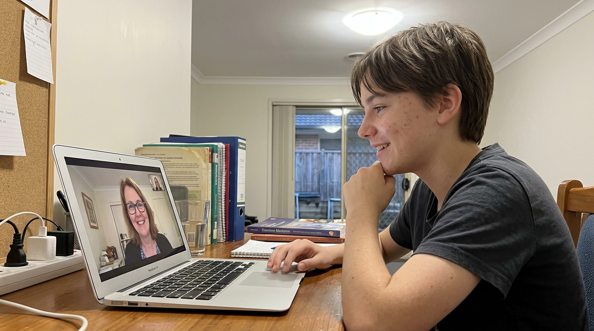

Every parent remembers the year
The gap opened
three years ago.
three years ago.
Year 5

"She loved school."
Homework was easy. Parent-teacher night was a breeze.
Year 7

"She stopped talking about it."
The shrug replaced the stories. 'Fine' replaced everything.
Year 9

"Her tutor found where it started."
Same person every week. Lesson report every Tuesday.
No contract. Start with one lesson.
Book a 1-on-1 lesson →